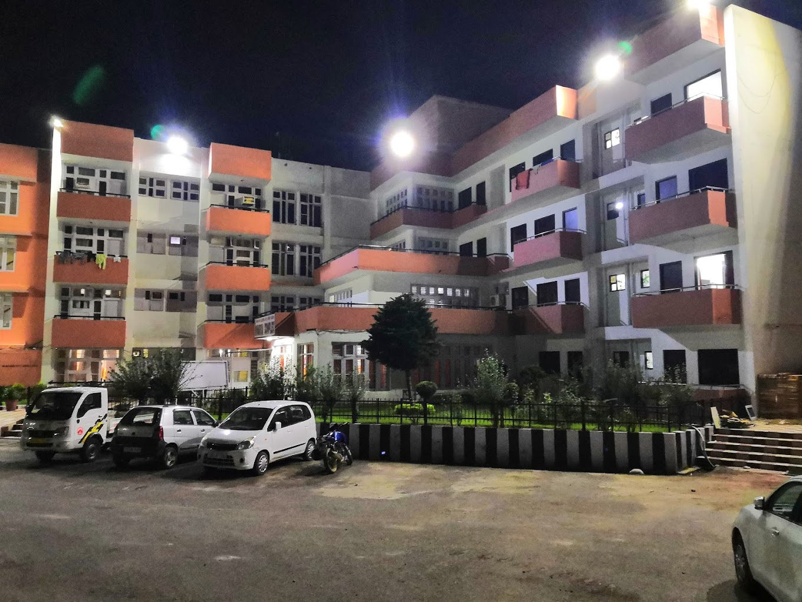
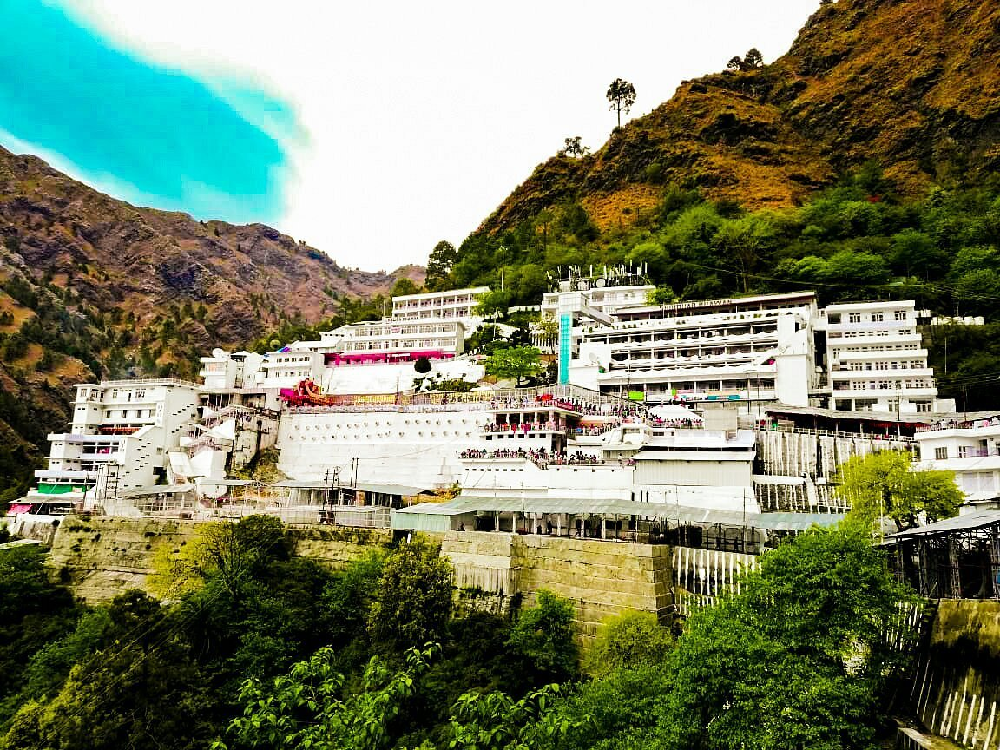

Welcome to Niharika Bhawan Katra, your trusted destination for a peaceful and comfortable stay during your holy trip to Vaishno Devi. Conveniently located near the Vaishno Devi Yatra base, we aim to provide clean, affordable, and welcoming accommodations to every pilgrim visiting this sacred shrine.
We understand the spiritual importance of your journey. That's why we focus on offering a stress-free environment where you can relax before or after your yatra. With well-maintained rooms, courteous staff, and essential facilities, Niharika Bhawan Katra is designed to be your home away from home.


Our mission is simple – to serve every devotee with warmth, care, and respect.
Whether visiting for the first time or returning every year, we aim to ensure a pleasant and memorable stay that supports your spiritual experience.
Hospitality is a form of devotion. At Niharika Bhawan, we combine traditional values with modern comforts to give you the best possible service at reasonable prices.
Niharika Bhawan Katra offers various room options to meet different needs and budgets. Our accommodation includes:
All rooms are neat, hygienic, and designed to ensure a restful stay.
Prime Location: Just a short distance from the Yatra starting point (Banganga).
Clean & Safe Environment: Regularly sanitized rooms with 24x7 security.
Essential Amenities: Free Wi-Fi, power backup, parking, hot water, laundry service, and in-room dining.
Family-Friendly: Peaceful surroundings ideal for children and elderly guests.
Easy Booking: Hassle-free room booking with online options available.
We take pride in our high standards of cleanliness and hospitality. Our staff is trained to support your needs with respect and attention, making your stay comfortable and spiritually fulfilling.
At Niharika Bhawan Katra, our guests are more than visitors – they are pilgrims on a divine journey. We treat each guest with heartfelt hospitality and aim to make your time with us a serene and satisfying experience.
Whether you are coming alone, with family, or in a group, we are here to take care of your stay so you can focus on your prayers and blessings at Mata Vaishno Devi Temple.
Years of Spiritual Service
Happy Visitors Every Month
Pure Vegetarian Menu
Spacious Rooms